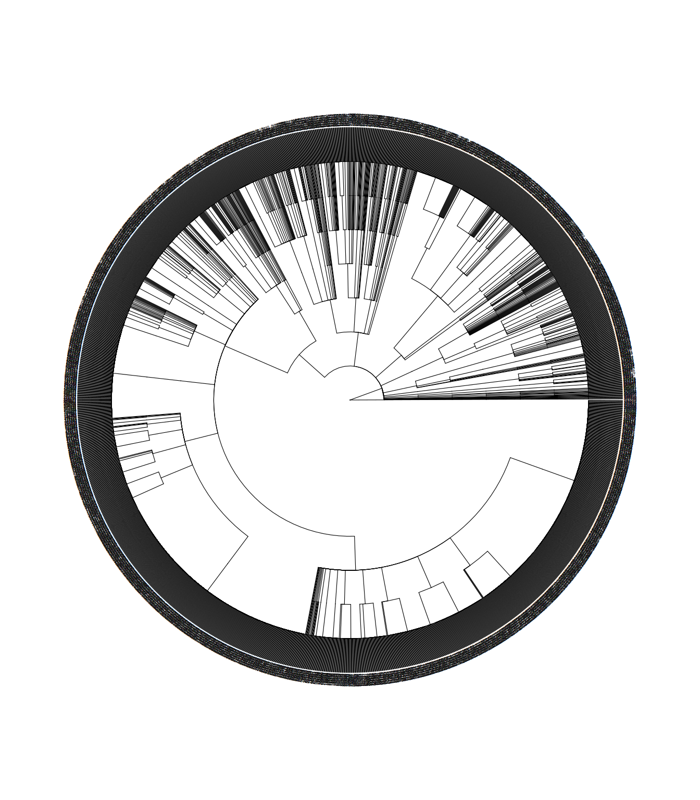
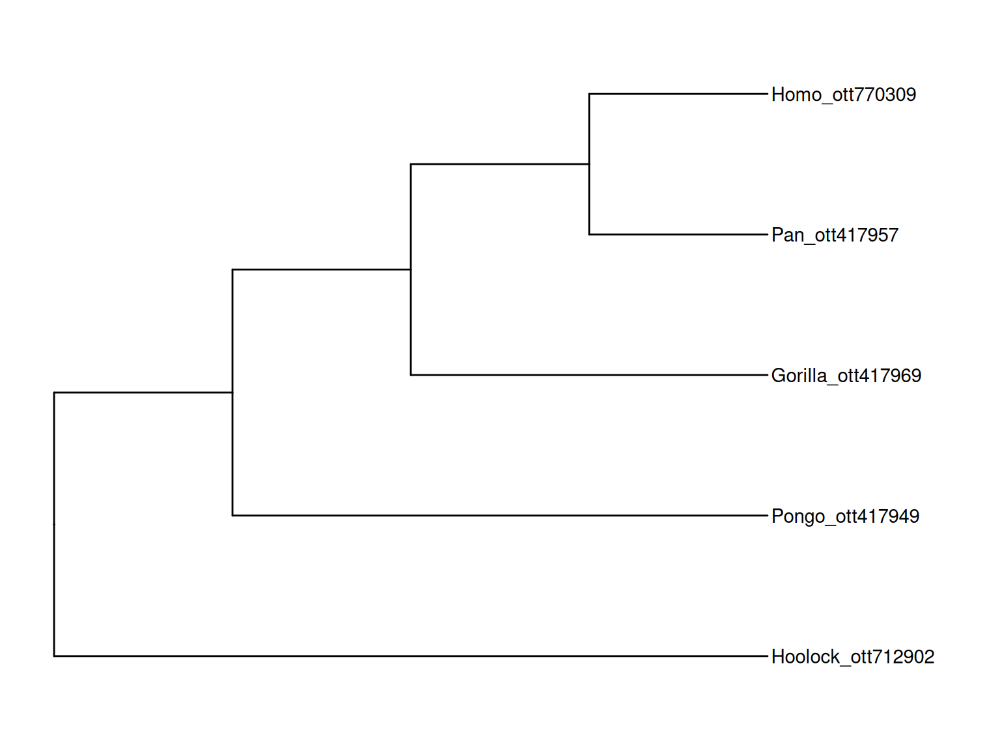
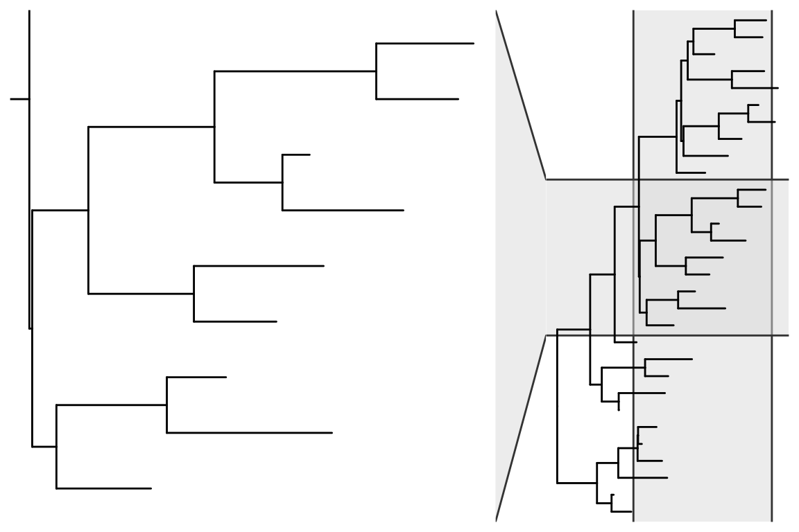
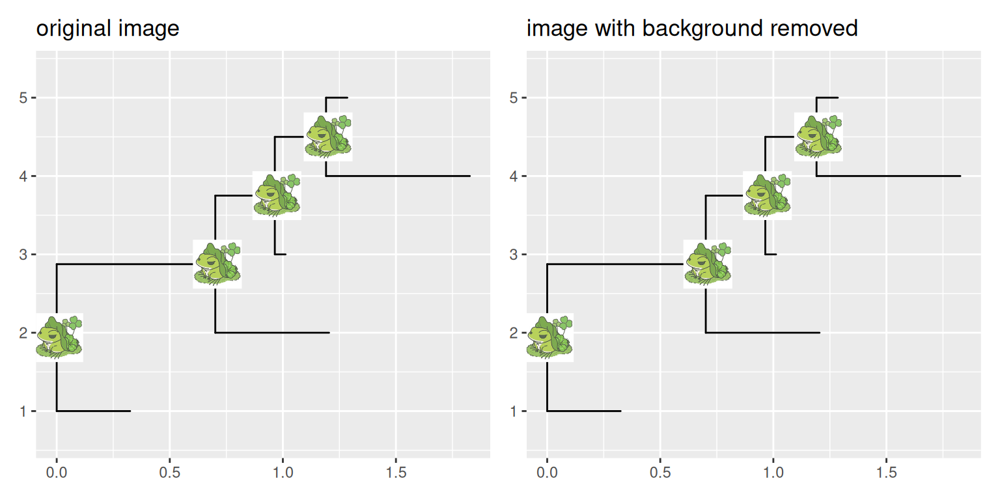
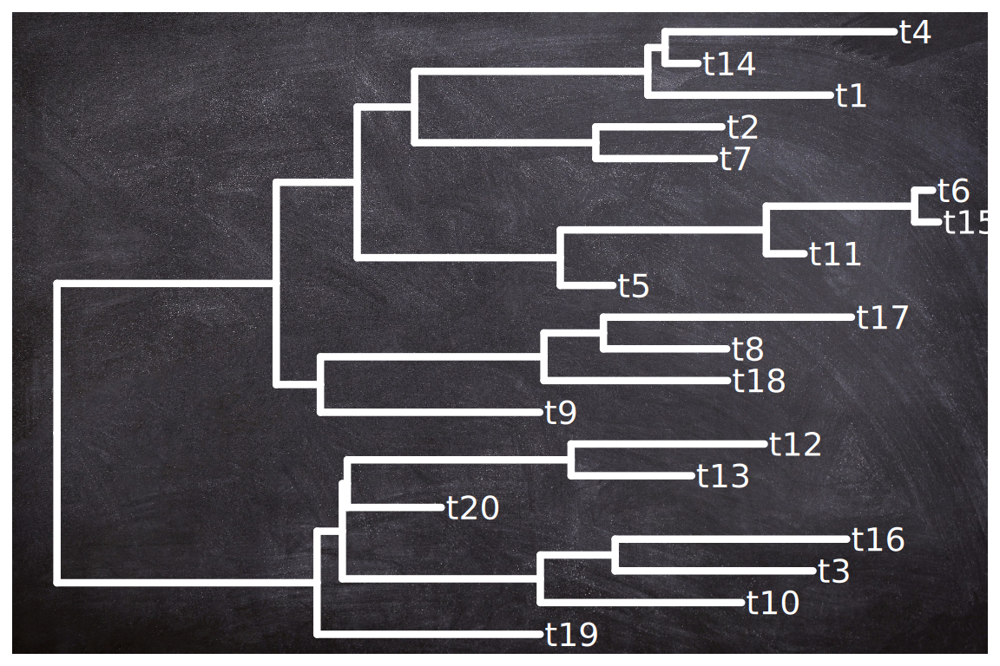

library("yulab.utils")
source("software-link.R")11.1 MicrobiotaProcess: Convert Taxonomy Table to a treedata Object
Taxonomy (genus, family, …) data are widely used in microbiome or ecology. Hierarchical taxonomies are the tree-like structure that organizes items into subcategories and can be converted to a tree object (see also the phylog object). The MicrobiotaProcess supports converting a taxonomyTable object, defined in the phyloseq package, to a treedata object, and the taxonomic hierarchical relationship can be visualized using ggtree (Figure ?fig-TaxaTree). When there are taxonomy names that are confused and missing, the as.treedata() method for taxonomyTable objects will complete their upper-level taxonomic information automatically.
library(MicrobiotaProcess)MicrobiotaProcess v1.18.0 For help:
https://github.com/YuLab-SMU/MicrobiotaProcess/issues
If you use MicrobiotaProcess in published research, please cite the
paper:
Shuangbin Xu, Li Zhan, Wenli Tang, Qianwen Wang, Zehan Dai, Lang Zhou,
Tingze Feng, Meijun Chen, Tianzhi Wu, Erqiang Hu, Guangchuang Yu.
MicrobiotaProcess: A comprehensive R package for deep mining
microbiome. The Innovation. 2023, 4(2):100388. doi:
10.1016/j.xinn.2023.100388
Export the citation to BibTex by citation('MicrobiotaProcess')
This message can be suppressed by:
suppressPackageStartupMessages(library(MicrobiotaProcess))
Attaching package: 'MicrobiotaProcess'The following object is masked from 'package:stats':
filterlibrary(ggtree)ggtree v4.1.1.003 Learn more at https://yulab-smu.top/contribution-tree-data/
Please cite:
Guangchuang Yu, Tommy Tsan-Yuk Lam, Huachen Zhu, Yi Guan. Two methods
for mapping and visualizing associated data on phylogeny using ggtree.
Molecular Biology and Evolution. 2018, 35(12):3041-3043.
doi:10.1093/molbev/msy194# The original kostic2012crc is a MPSE object
data(kostic2012crc)
taxa <- tax_table(kostic2012crc)
#The rownames (usually is OTUs or other features ) of the taxa will be
# served as the tip labels if include.rownames = TRUE
tree <- as.treedata(taxa, include.rownames=TRUE)
# Or extract the taxa tree (treedata) with mp_extract_tree, because the
# taxonomy information is stored as treedata in the MPSE class (kostic2012crc).
# tree <- kostic2012crc %>% mp_extract_tree()
ggtree(tree, layout="circular", size=0.2) +
geom_tiplab(size=1)Warning: Using `size` aesthetic for lines was deprecated in ggplot2 3.4.0.
ℹ Please use `linewidth` instead.
ℹ The deprecated feature was likely used in the ggtree package.
Please report the issue at <https://github.com/YuLab-SMU/ggtree/issues>.Warning: Unknown or uninitialised column: `subgroup`.
Unknown or uninitialised column: `subgroup`.
Unknown or uninitialised column: `subgroup`.
Unknown or uninitialised column: `subgroup`.
taxonomyTable object to a treedata object.11.2 rtol: An R Interface to Open Tree API
The rtol (Michonneau et al., 2016) is an R package to interact with the Open Tree of Life data APIs. Users can use it to query phylogenetic trees and visualize the trees with ggtree to explore species relationships (Figure ?fig-rotlSubtree).
## example from: https://github.com/ropensci/rotl
library(rotl)
apes <- c("Pongo", "Pan", "Gorilla", "Hoolock", "Homo")
(resolved_names <- tnrs_match_names(apes)) search_string unique_name approximate_match score ott_id is_synonym
1 pongo Pongo FALSE 1 417949 FALSE
2 pan Pan FALSE 1 417957 FALSE
3 gorilla Gorilla FALSE 1 417969 FALSE
4 hoolock Hoolock FALSE 1 712902 FALSE
5 homo Homo FALSE 1 770309 FALSE
flags number_matches
1 2
2 sibling_higher 2
3 sibling_higher 1
4 1
5 extinct_inherited, sibling_higher 1tr <- tol_induced_subtree(ott_ids = ott_id(resolved_names))Warning in collapse_singles(tr, show_progress): Dropping singleton nodes with
labels: mrcaott83926ott6145147, mrcaott83926ott3607728, mrcaott83926ott3607876,
mrcaott83926ott3607873, mrcaott83926ott3607687, mrcaott83926ott3607716,
mrcaott83926ott3607689, mrcaott83926ott3607732, mrcaott770295ott3607719,
mrcaott770295ott3607692, Ponginae ott1082538, Hylobatidae ott166544ggtree(tr) + geom_tiplab() + xlim(NA, 5)
11.3 Convert a ggtree object to a plotly object
library("yulab.utils")One way to make a quick interactive phylogenetic tree is using ggtree with the plotly package. The ggplotly() is able to convert ggtree object to a plotly object. Note that the ggtree package also supports interactive manipulation of the phylogenetic tree via the identify() method.
# example from https://twitter.com/drandersgs/status/965996335882059776
# LOAD LIBS ---------------------------------------------------------------
library(ape)
library(ggtree)
library(plotly)
# CREATE A TREE -------------------------------------------------------------
n_samples <- 20
n_grp <- 4
tree <- ape::rtree(n = n_samples)
# CREATE SOME METADATA ----------------------------------------------------
id <- tree$tip.label
set.seed(42)
grp <- sample(LETTERS[1:n_grp], size = n_samples, replace = T)
dat <- tibble::tibble(id = id,
grp = grp)
# PLOT THE TREE -----------------------------------------------------------
p1 <- ggtree(tree)
metat <- p1$data %>%
dplyr::inner_join(dat, c('label' = 'id'))
p2 <- p1 +
geom_point(data = metat,
aes(x = x,
y = y,
colour = grp,
label = id))
plotly::ggplotly(p2)
11.4 Comic (xkcd-like) phylogenetic tree
library(htmltools)
library(XML)
library(gridSVG)
library(ggplot2)
library(ggtree)
library(comicR)
p <- ggtree(rtree(30), layout="circular") +
geom_tiplab(aes(label=label), color="purple")
print(p)
svg <- grid.export(name="", res=100)$svg## need to convert it to png or pdf for pdfbook
tagList(
tags$div(
id = "ggtree_comic",
tags$style("#ggtree_comic text {font-family:Chalkduster;}"),
HTML(saveXML(svg)),
comicR("#ggtree_comic", ff=5)
)
) # %>% html_print()11.5 Print ASCII-art Rooted Tree
library(data.tree)
tree <- rtree(10)
d <- as.data.frame(as.Node(tree))
names(d) <- NULL
print(d, row.names=FALSE)NA
NA 11
NA ¦--12
NA ¦ ¦--t1
NA ¦ °--13
NA ¦ ¦--14
NA ¦ ¦ ¦--t4
NA ¦ ¦ °--t10
NA ¦ °--15
NA ¦ ¦--16
NA ¦ ¦ ¦--17
NA ¦ ¦ ¦ ¦--t5
NA ¦ ¦ ¦ °--t2
NA ¦ ¦ °--t6
NA ¦ °--t7
NA °--18
NA ¦--19
NA ¦ ¦--t9
NA ¦ °--t3
NA °--t8It is neat to print ASCII-art of the phylogeny. Sometimes, we don’t want to plot the tree, but just take a glance at the tree structure without leaving the focus from the R console. However, it is not a good idea to print the whole tree as ASCII text if the tree is large. Sometimes, we just want to look at a specific portion of the tree and its immediate relatives. In this scenario, we can use treeio::tree_subset() function (see session 2.4) to extract selected portion of a tree. Then we can print ASCII-art of the tree subset to explore the evolutionary relationship of the species of our interest in the R console.
The ggtree supports parsing tip labels as emoji to create phylomoji. With the data.tree and emojifont packages, we can also print phylomoji as ASCII text (Figure ?fig-emojidatatree).
library(data.tree)
library(emojifont)
tt <- '((snail,mushroom),(((sunflower,evergreen_tree),leaves),green_salad));'
tree <- read.tree(text = tt)
tree$tip.label <- emoji(tree$tip.label)
d <- as.data.frame(as.Node(tree))
names(d) <- NULL
print(d, row.names=FALSE)
Another way to print ASCII-art of phylogeny is to use the ascii() device defined in the devout package. Here is an example:
library(devout)
ascii(width=80)
ggtree(rtree(5))
invisible(dev.off())NA
NA #####################
NA #
NA ##################
NA # #
NA # ###############################
NA #
NA ################
NA # #
NA # # ##########
NA # # #
NA # ############################
NA # #
NA # ###############################
NA #
NA #
NA #
NA ###############
NA
NA 11.6 Zoom in on the Selected Portion
In addition to using viewClade() function, users can use the ggforce package to zoom in on a selected clade (Figure ?fig-facetZoom).
set.seed(2019-08-05)
x <- rtree(30)
nn <- tidytree::offspring(x, 43, self_include=TRUE)
ggtree(x) + ggforce::facet_zoom(xy = node %in% nn)
11.7 Tips for Using ggtree with ggimage
The ggtree supports annotating a tree with silhouette images via the ggimage package. The ggimage provides the grammar of graphic syntax to work with image files. It allows processing images on the fly via the image_fun parameter, which accepts a function to process magick-image objects (Figure ?fig-ggimagebg). The magick package provides several functions, and these functions can be combined to perform a particular task.
11.7.1 Example 1: Remove background of images
library(ggimage)Loading required package: ggplot2imgdir <- system.file("extdata/frogs", package = "TDbook")
set.seed(1982)
x <- rtree(5)
p <- ggtree(x) + theme_grey()
p1 <- p + geom_nodelab(image=paste0(imgdir, "/frog.jpg"),
geom="image", size=.12) +
ggtitle("original image")
p2 <- p + geom_nodelab(image=paste0(imgdir, "/frog.jpg"),
geom="image", size=.12,
image_fun= function(.) magick::image_transparent(., "white")) +
ggtitle("image with background removed")
aplot::plot_list(p1, p2, ncol=2)
11.7.2 Example 2: Plot tree on a background image
The geom_bgimage() adds a layer of the image and puts the layer to the bottom of the layer stack. It is a normal layer and doesn’t change the structure of the output ggtree object. Users can add annotation layers without the background image layer (Figure ?fig-bgimage).
ggtree(rtree(20), size=1.5, color="white") +
geom_bgimage('img/blackboard.jpg') +
geom_tiplab(color="white", size=5, family='xkcd')
11.8 Run ggtree in Jupyter Notebook
If you have Jupyter notebook installed on your system, you can install IRkernel with the following command in R:
install.packages("IRkernel")
IRkernel::installspec()Then you can use ggtree and other R packages in the Jupyter notebook (Figure ?fig-jupyter). Here is a screenshot of recreating Figure ?fig-phylomoji1 in the Jupyter notebook.

Michonneau, F., Brown, J. W., & Winter, D. J. (2016). Rotl: An r package to interact with the open tree of life data. Methods in Ecology and Evolution, 7(12), 1476–1481. https://doi.org/10.1111/2041-210X.12593